来源：https://a0m039v8atn.feishu.cn/docx/LXyBdE74Po2JyexDdhXc3s8nn4b
再有几天就是一年一度的国庆佳节，晨哥先预祝大家中秋国庆双节快乐！在这个举国欢庆的日子里，国庆相关的流量猛增，随之呈现出不少相关的项目也热度飙升，这里将为大家拆解一些低成本、易上手的项目，供大家参考。
近年来，随着微信日活越来越大，每次到了国庆期间越来越多的小伙伴开始换上了国庆主题的微信头像，来表达对祖国生日的庆祝。
但是大多数人其实是不知道该怎么去制作这种个性化的国庆头像的，其中也就潜藏着商机。
获利思路：
本玩法不止适用于国庆哦，还适合春节等有头像制作需求的传统节日。
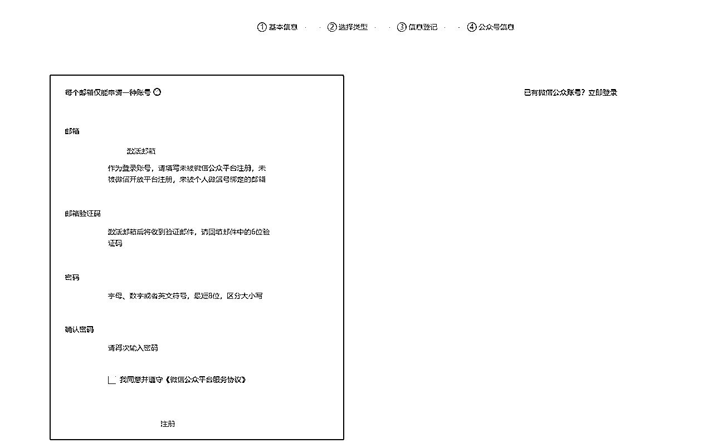
流量主功能是本项目主要的收益来源，可以获得广告分成或者返佣等多种收入。
开通门槛：
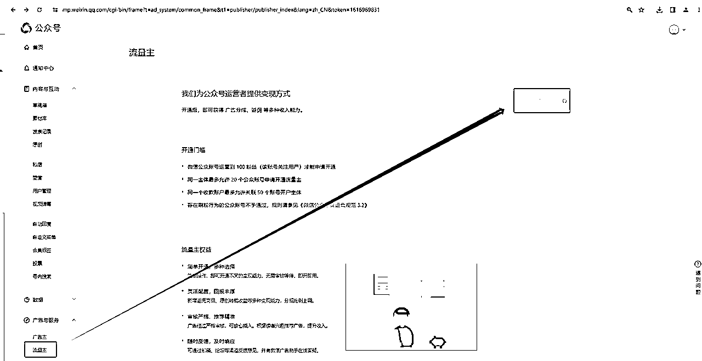
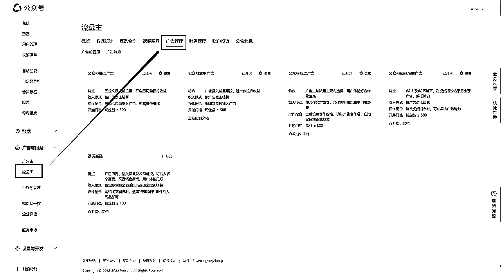
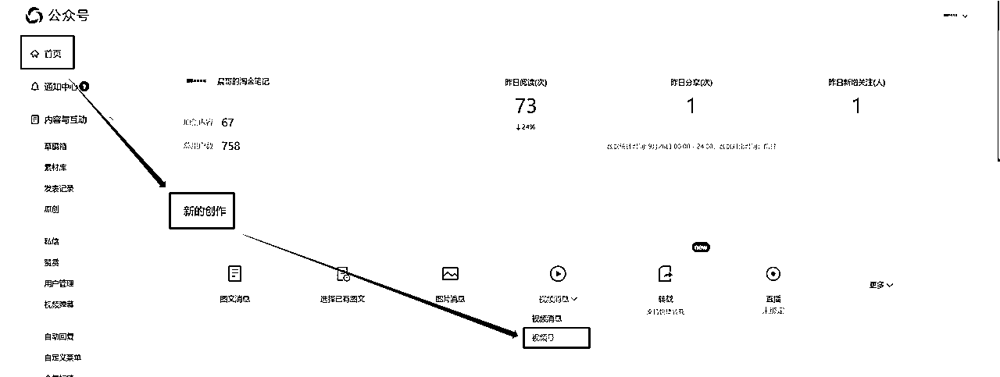
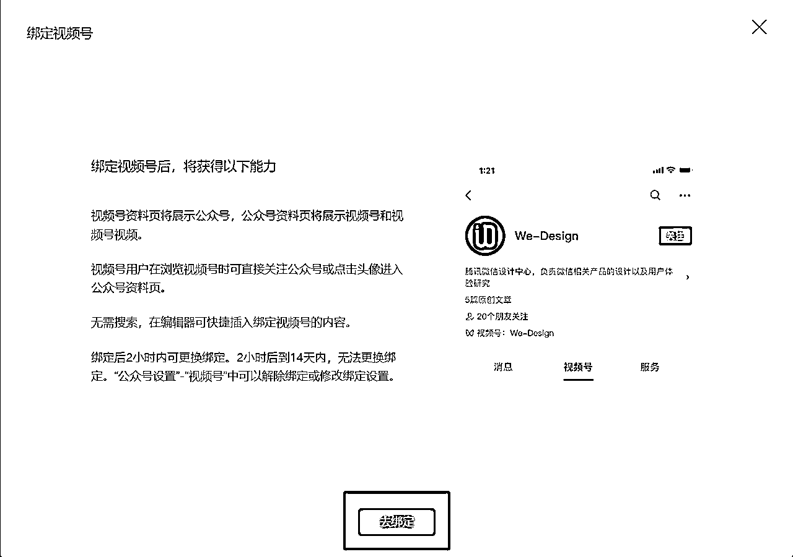
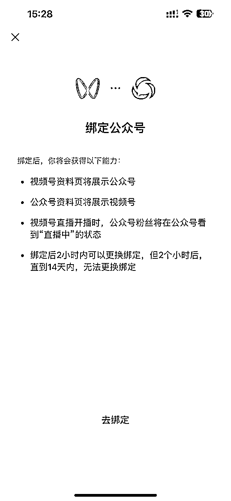
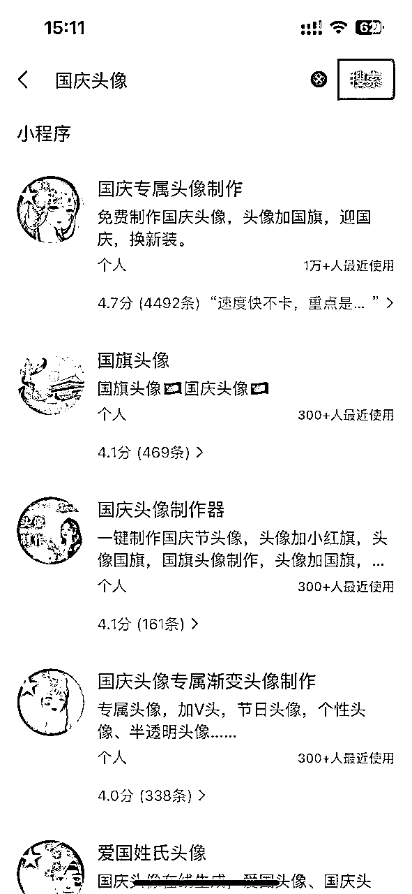
微信搜一搜“国庆头像”
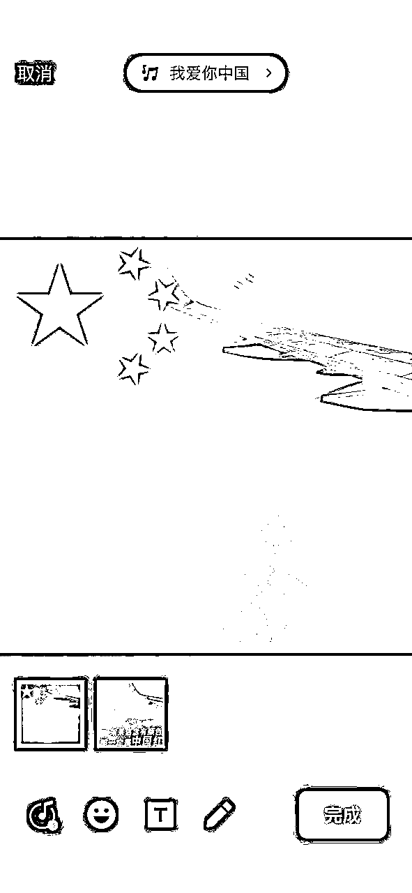
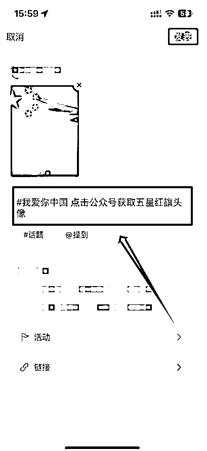
在公众号首页，点击新的创作 > 图文信息。在公众号文章中可以做私域的引导或者只是进行广告收入的赚取。
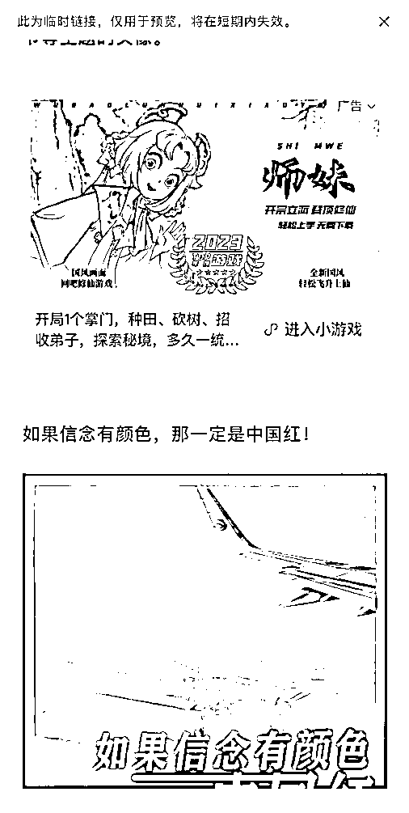
说明：
每次临近国庆或我国其他传统节日时，各大中小学都会要求学生制作手抄报，本项目，以解放孩子与家长的双手为目的，主攻没有时间帮助孩子进行手抄报制作的家长们的痛点。
通过发布使用手抄报模板制作手抄报的视频，突出模板的便利特性，获取学生家长这个特定群体的流量，后续进行短视频带货或者直播带货，从而赚取佣金。
由于每个传统节日，中小学生都有手抄报制作的需求，所以该商品并不局限于国庆期间进行售卖。
抖音或其他平台，搜索手抄报模板，找到热点视频，获取视频链接，前往轻抖进行水印去除及下载操作。
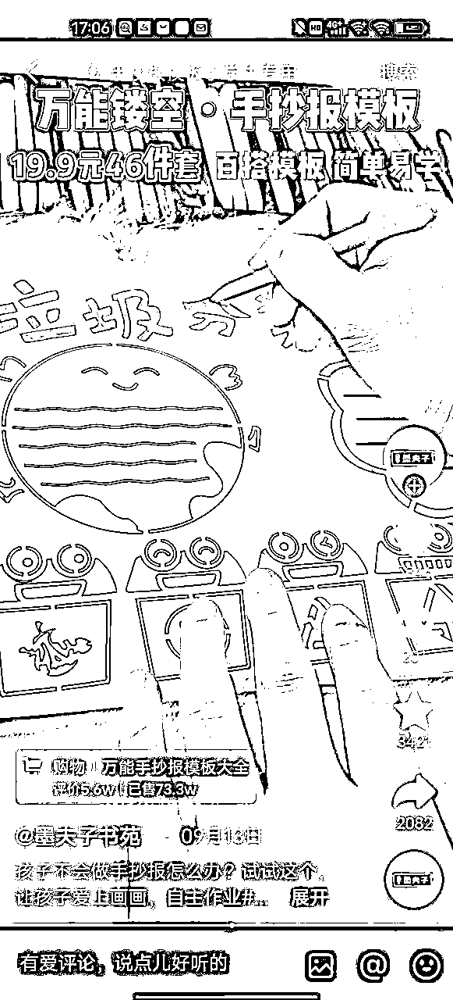
在视频号选品中心或者其他选品渠道（1688、拼夕夕等），搜索手抄报模板并上架到橱窗。
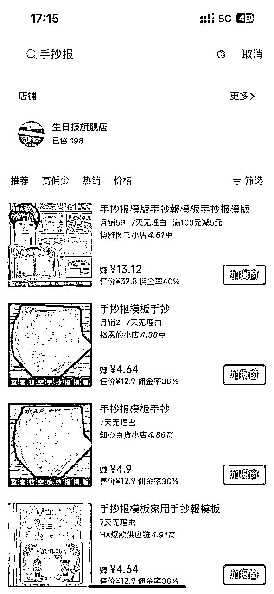
国庆将近，有车人士一般都会在自己的爱车上贴一个五星红旗之类的车贴，这里将为大家带来车贴项目的拆解。
通过发布给爱车贴上红旗车贴的视频，配以爱国相关的文案及配乐，从而获得国庆流量，进行带货赚取佣金。
在抖音或其他短视频平台搜索“国庆车贴”，在搜索结果中找到比较火爆的视频，复制链接并前往轻抖小程序进行去水印以及下载操作。
这里建议搬运有公信力人群参与的视频，比如下图中带有交警叔叔视频，更利于提高用户认可度。
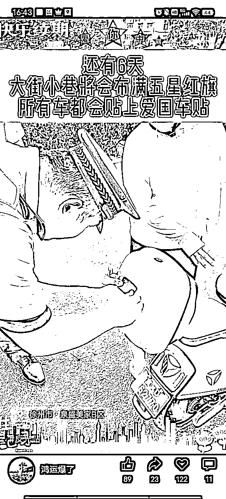
在视频号选品中心或者其他选品渠道（1688、拼夕夕等），搜索商品并完成上架。
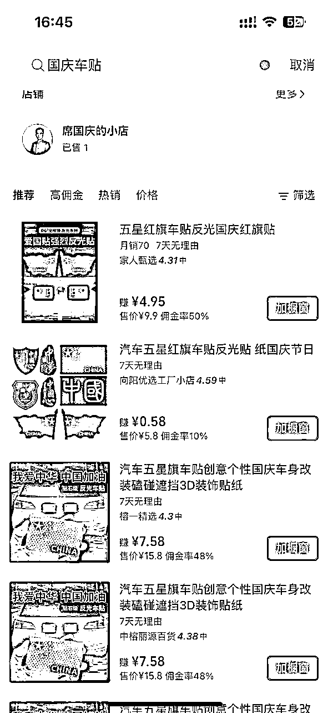
以上就是本次国庆热点项目拆解的全部内容，国庆热点是每年比较大的，更多项目以及玩法欢迎大家一起交流探讨，祝愿大家中秋国庆双节，平安喜乐~